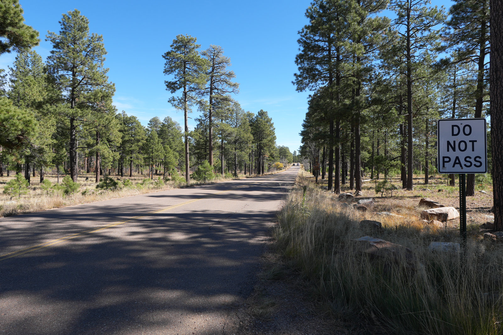

Rim Campground
The quick FR 300 view-side campground: dry, exposed, and better when you bring water and want the edge nearby.
 By Chris Follin
By Chris FollinREGION GUIDE
The Rim is the default Phoenix escape for a reason: cooler air, pines, lakes, and enough campground variety to make a normal weekend feel like a real reset. The catch is popularity, weather, and picking the right kind of site for the trip you actually want.
The Mogollon Rim is the easiest way to turn a Phoenix weekend from heat management into pine shade, lake air, and jacket weather. The decision is not whether the Rim is worth it. The decision is how much crowding, road complexity, lake traffic, and campground structure your group can handle.

The quick FR 300 view-side campground: dry, exposed, and better when you bring water and want the edge nearby.

A quieter lake lane for people willing to stay self-contained and carry a little more responsibility for the payoff.

A shaded creek-adjacent base that feels calmer than the bigger lake hubs, especially if your setup is not huge.

The familiar Rim answer: lake access, pines, cooler nights, easy appeal, and enough popularity to require a backup.

The more built-out Willow Springs basecamp, useful when electric-site options and predictability matter.

The practical Payson-area choice when access, town backup, and easy logistics matter more than a special setting.
The Rim is easiest to sort by role: lake trip, view trip, creek shade, developed base, or convenient Payson backup.
| Camp | Best Use | Services | Watch For | Pick When |
|---|---|---|---|---|
| Rim Campground | Fast FR 300 arrival, Rim viewpoints, dry basecamp | Developed sites; no potable water listed | Wind, parallel parking, dry camping, weekend pressure | You want views nearby and can bring water |
| Bear Canyon Lake | Quieter water, fishing, light kayak/SUP trips | Primitive lake-area camping; self-contained setup | Steep carry, limited parking, no potable water | You want water without the full campground crowd |
| Blue Ridge Reservoir | Narrow canyon water, paddling, calm mornings | Dispersed-style logistics around reservoir access | Wind, limited parking, steep access, weak cell | You are planning around water conditions and an early start |
| Woods Canyon Lake | Classic first Rim lake weekend | Developed campground basics nearby | Crowds, ramp traffic, fire restrictions, fast storms | You want the familiar lake-and-pines answer |
| Sharp Creek | Creek-adjacent shade and a calmer basecamp | Developed campground basics | Tighter pads, bugs, no direct lake access | You want shade and creek sound without lake-loop chaos |
| Christopher Creek | Creekside family camp and busier social weekends | Developed campground basics | Weekend pressure, road noise, creek crowds | You want creek access and do not need isolation |
| Canyon Point | Large developed base near Willow Springs | Developed loops; some electric-site options | Reservations, loop traffic, less quiet | You want structure and predictability for a mixed-comfort group |
| Mogollon | Deeper FR 300 pine base near Woods Canyon | Potable water in season; 26 developed sites | Parallel parking, gravel loops, weekend lake traffic | You want Woods Canyon access with a slightly deeper base |
| Sinkhole | Willow Springs access and smaller campground feel | 26 developed sites, chip-seal roads | First-come loops, back-in sites, monsoon storms | You want quieter Willow Springs access than the obvious hubs |
| Houston Mesa | Payson backup, easy access, low-friction base | Large developed campground near town | Less scenic payoff, busier developed energy | You want convenience and town backup more than a destination camp |
| Spillway | Immediate Woods Canyon water access | Compact campground near lake activity | Small-rig limits, day-use traffic, compressed space | You want fast fishing or lake-loop access and pack small |
The better Rim pick usually comes down to one tradeoff: water, views, structure, or convenience.
CLASSIC LAKE
Choose: lake access is the main point and you can handle crowds. Skip: you need quiet, large sites, or a lazy late arrival on a summer weekend.
QUIETER WATER
Choose: you are self-contained and willing to work a little for calmer water. Skip: easy unloading, potable water, or polished campground convenience matters.
VIEW TRIP
Choose: you brought water and want the Rim edge close. Skip: wind is up, parking geometry is stressful, or you need a softer campground.
DEVELOPED BASE
Choose: bathrooms, roads, and a predictable base matter. Skip: you are trying to avoid loop traffic, reservations, or a busy campground feel.
CREEK SHADE
Choose: shade and creek sound are more important than lake access. Skip: your setup needs wide pads or you are expecting solitude.
EASY PAYSON BACKUP
Choose: you need a practical first night, family logistics, or town nearby. Skip: the trip needs to feel remote or visually special from camp.
Use these pages when you want the individual details: photos, site feel, access notes, ratings, and the tradeoffs that do not fit in a broad region summary.
FROM PHOENIX
The Rim is close enough for a normal weekend, which is exactly why the obvious lake campgrounds fill. Leave with a second target and a willingness to change lanes.
WATER
The best water spots can have the worst unloading, parking, or crowd pressure. Decide whether the weekend needs paddling, easy meals, quiet sleep, or a bathroom before chasing the lake.
STORMS
Choose drainage, keep gear off low ground, stake shelter properly, and avoid committing to a site that only works in dry weather. A prettier low pad is not worth a flooded tent.